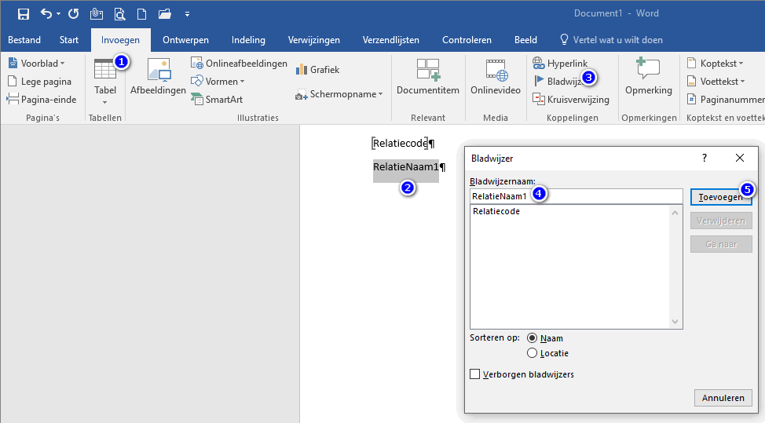
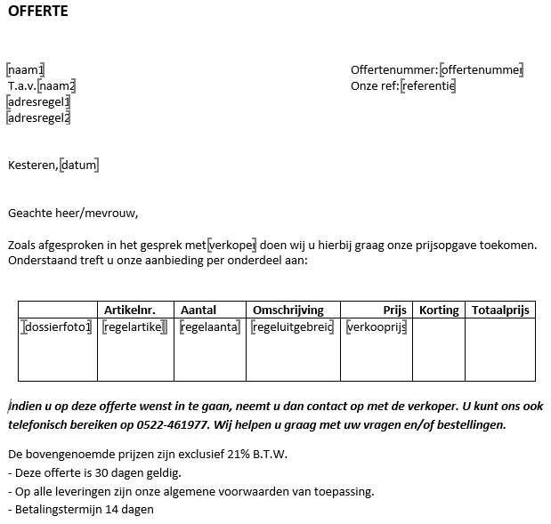

Om een nieuw Word document aan te maken voor bijv. een offerte sjabloon is het gemakkelijkst om het standaard offerte document te kopiëren en aan te passen aan de standaard layout van uw bedrijf.
Om een bladwijzer toe te voegen in Word, doorloopt u de volgende stappen:
Ga naar tabblad Invoegen.
Type de bladwijzernaam in bijv. relatienaam1.
Markeer daarna deze bladwijzernaam bijv. relatienaam1. Tip: kopieer deze.
Ga naar Bladwijzer.

Geef de bladwijzernaam op. Tip: plak deze (de naam kan niet meer gewijzigd worden).
Opmerking: De bladwijzernamen altijd in kleine letters opgeven.
Kies voor de knop Invoegen.
De bladwijzer is toegevoegd en kan gebruikt worden.

Opmerking: Ook de Relatie- of Machinegegevens kunnen naar Word geëxporteerd of overgezet worden. Bij Opvragen relaties of Opvragen machines is de knop Naar Word hiervoor beschikbaar.
Gerelateerde onderwerpen
Copyright ©